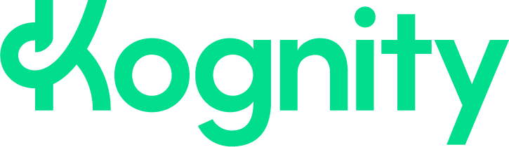
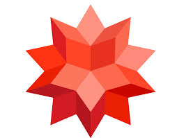

Core Platforms
Tools Used Across the Course
These are the main tools used in class for lab work, homework, graphing, simulations, and checking calculations.
Primary software for data collection, graphing, and analysis in laboratory work.

Main textbook platform for reading, homework, and guided practice.

Useful for checking calculations, algebraic manipulation, and equation solving.
Interactive simulations for visualizing physical ideas and testing variables.
Fast graphing and function visualization for classwork and data analysis.
LaTeX
Scientific Writing Tools
LaTeX is the standard for clean scientific and mathematical writing, and it is worth learning early.
The established standard for collaborative LaTeX writing in universities and research environments.
A newer LaTeX-focused writing tool that supports drafting, editing, formatting, citations, and scientific writing workflows.
SupportIf you want to get started with LaTeX, feel free to email me or come speak with me and we can look at which tool fits your workflow best.